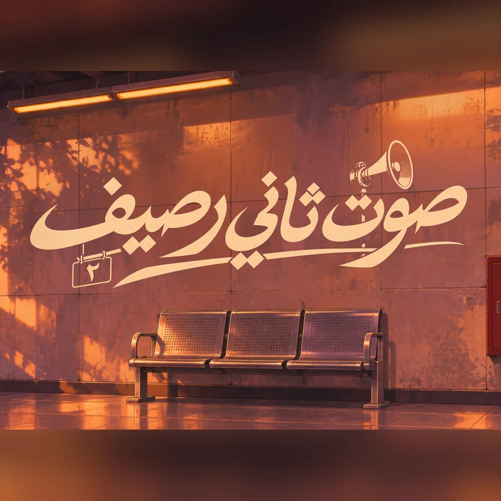

عن الأغنية
«صوت ثاني رصيف» عن الأشخاص الذين يصنعون فرقًا في حياتنا دون أن نلاحظ. حضورهم ثابت لدرجة أننا ننسى أن نراهم، ولا ننتبه لقيمتهم إلا حين يغيبون.
هذه الأغنية لكل من اعتدنا وجوده حتى نسينا أن نشكره.
A voice we heard every day, until it was gone. The Arabic version of "The Voice at Platform Two", about the people we take for granted.